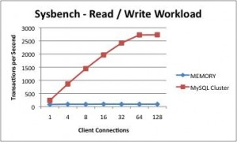

Many people use the MySQL MEMORY storage engine for applications where they don’t need their data to be highly available or even survive restarts. Where this works best is for applications that are dominated by reads and (obviously) where the data doesn’t need to survive any kinds of problems (or where it can be recovered from another source). Typical applications are :
- Caching of small tables to reduce the latency of database look-ups.
- Simple session management (i.e. with no analytics or reporting on the session data).
- Buffering of multiple updates for batched inserts into tables managed by other MySQL storage engines. Â (Note requires additional custom application development).
While great for some applications (at least initially), as the application requirements start to grow (need for transactions, data persistence/durability, increasing number of write operations, need to scale) then either you need to migrate away from MEMORY or implement more and more data management functionality needs in your application.
Why not consider using MySQL Cluster instead? While the headline Cluster configurations may scale out horizontally and provide 99.999+% availability, it is simple to configure out those features to provide a pure-memory, single host database as described in “How can a database be in-memory and durable at the same time?“. What’s more if/when you need to add extra capabilities such as ACID transactions, scalability and high availability then those features are all available to you.
If you’re constrained to a single server and your application only reads data then there is a performance impact in using MySQL Cluster (in benchmarks, throughput was 3x higher for MEMORY) but remember that you can scale out MySQL Cluster to increase performance and for models with modest write rates MySQL Cluster provides a massive performance boost even when constrained to 1 server (as shown in the graph at the head of this post, Cluster delivers a 30x improvement performance improvement when running a Sysbench benchmark – together with a 3x reduction in latency). The biggest single reason for the massive performance difference is that MySQL Cluster has row-based locks whereas MEMORY uses table-level locks.
For a more detailed comparison, take a look at the new “Scaling Web Services with MySQL Cluster: An Alternative to the MySQL Memory Storage Engine” white paper and/or listen to the associated webinar.
Migrating Data from The Memory Storage Engine to MySQL Cluster
As a starting point, it is important to understand that the MySQL Server (mysqld) binary that is provided as part of MySQL Community Edition or MySQL Enterprise Server is not suitable for use with MySQL Cluster. Â Therefore it is necessary to migrate your database to an instance of mysqld that is packaged with the MySQL Cluster software.
This post looks at how to migrate your data from a ‘regular’ MySQL Server to MySQL Cluster. Although MySQL Cluster is typically run over multiple servers to provide High Availability (HA), for this example migration it is run on a single server (the logic being that we’re replacing a MEMORY database that has no HA requirements). If you want to move to a HA configuration then the main change is that the MySQL Cluster configuration should include more nodes (processes) and they should be spread across multiple physical hosts. The example actually goes a step further in compromising HA and turns off the checkpointing of data to disk for the migrated tables – getting closer to the behavior of MEMORY tables.
For this example, there are assumed to be 2 MySQL installations on the server – the original binaries in <mysql-bin> and the ones for MySQL Cluster in <mysql-cluster-bin>.
Data in MyISAM and InnoDB tables (including system data such as user privileges and stored procedures) will appear in the new MySQL Server automatically. Â By default the contents (but not schema) for the MEMORY tables will be lost. If it is important to keep that MEMORY data then use the mysqldump command to make a copy:
[my_db]$ <mysql-bin>/mysqldump -h 127.0.0.1 -P3306 -u root --no-create-db --no-create-info --result-file=./data.txt --databases clusterdb > memory_data.txt
Create a new configuration file for the MySQL Cluster deployment:
my_db/conf/config.ini:
[ndbd default]
noofreplicas=1
datadir=/home/billy/mysql/my_db/data
DataMemory=1000M
IndexMemory=10M
[ndbd]
hostname=localhost
[ndb_mgmd]
hostname=localhost
datadir=/home/billy/mysql/my_db/data
[mysqld]
Start up the management node and data node for the Cluster:
[my_db]$ <mysql-cluster-bin>/ndb_mgmd -f conf/config.ini --configdir=./conf/ --initial
[my_db]$ <mysql-cluster-bin>/ndbd -c 127.0.0.1:1186
Wait until the nodes are started:
[my_db]$ <mysql-cluster-bin>/ndb_mgm -e show
Connected to Management Server at: localhost:1186
Cluster Configuration
---------------------
[ndbd(NDB)] 1 node(s)
id=1 @127.0.0.1 (mysql-5.1.44 ndb-7.1.3, Nodegroup: 0, Master)
[ndb_mgmd(MGM)] 1 node(s)
id=2 @127.0.0.1 (mysql-5.1.44 ndb-7.1.3)
[mysqld(API)] 1 node(s)
id=3 (not connected, accepting connect from any host)
Edit the configuration file (from the original MySQL Server) by adding the highlighted rows:
my_db/conf/my.cnf:
[mysqld]
ndbcluster
datadir=/home/billy/mysql/my_db/data
basedir=/usr/local/mysqlc # The MySQL Cluster installation, not the original
Stop the original MySQL Server:
[my_db]$ <mysql-bin>/mysqladmin -u root -h 127.0.0.1 -P 3306 shutdown
Start the new MySQL Server:
[my_db]$ <mysql-cluster-bin>/mysqld --defaults-file=conf/my.cnf &
Make sure that the original database is upgraded so that the MySQL Cluster version of mysqld can properly use it and you get all of the benefits (for example, real-time reporting with ndbinfo):
[my_db]$ <mysql-cluster-bin>/mysql_upgrade
Convert the MEMORY tables into MySQL Cluster ones (engine=ndb) with checkpointing to disk (logging) turned off:
[my_db]$ <mysql-cluster-bin>/ mysql -u root -h 127.0.0.1 -P 3306
mysql> SET ndb_table_no_logging=1;
mysql> ALTER TABLE tab1 engine=ndb;
mysql> ALTER TABLE tab2 engine=ndb;
mysql> ALTER TABLE tab3 engine=ndb;
mysql> SET ndb_table_no_logging=0;
If the contents of the MEMORY tables were backed up then that data can optionally be loaded at this point (original MyISAM and InnoDB table data will already be populated):
mysql> SOURCE memory_data.txt;
Finally, if there is any intent to use MySQL replication with the new version of the database then check that each of the tables has a primary key defined. If there is a table without a primary key then either make one or more of the existing columns be the primary key or add a new, auto-incrementing one:
mysql> ALTER TABLE tab1 ADD COLUMN id BIGINT AUTO_INCREMENT PRIMARY KEY;
This procedure involves loss of service while the data is migrated (it assumes that there is not enough memory available on the server for both databases to exist in parallel). If there is extra capacity available (at least during the migration) then it is possible to avoid the downtime by using replication.
In many cases, the migration would not be from a single MySQL Server to a single-server MySQL Cluster deployment, but instead from a pool of independent MySQL Servers (where the application shards data across them) to a multi-server MySQL deployment. This allows the application to stop sharding the data as all mysqld instances in the Cluster have visibility of all of the data. In this scenario, if the data from the original MySQL Servers needs to be maintained then a mysqldump would be performed on each of those Servers (for all tables) and the data loaded into any of the MySQL Servers in the MySQL Cluster deployment.
{kind=link}
{kind=link}
{kind=link}
{kind=link}